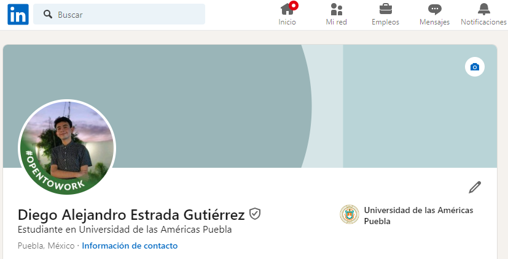

Diego Estrada
Summary
During the summer of 2023, I had the exciting opportunity to work at the Bonafont Distribution Center (CEDIS)
where I played a key role in the inventory team.
My primary responsibility was to ensure accuracy and efficiency in product inventory control, which was essential to maintain smooth operational flow and meet market demand.
During my time at Bonafont, I not only gained practical skills in inventory management, but also developed competencies in teamwork, effective communication and problem solving in a dynamic and results-oriented environment.
Education
- University of the Americas Puebla, logistics and supply chain engineering (2019-Act)
- UDLAP-SEDIF High School (2016-2019)
- Puebla Educational Center (2013-2016)
Work experience
- Logistics engineering intern CEDIS Bonafont (May 2023-Aug 2023)
- Engineering intern Casa Tapier (Aug 2022- Oct 2022)
- Collects balls Lobos BUAP (2015-2016)
Social Network

More Information
About Me
Contact Me